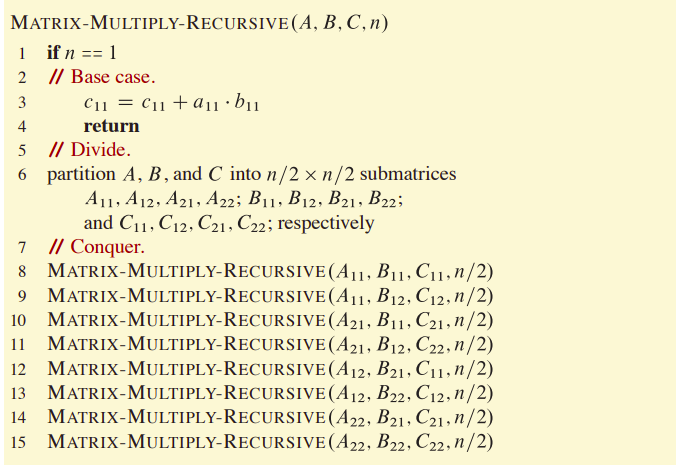
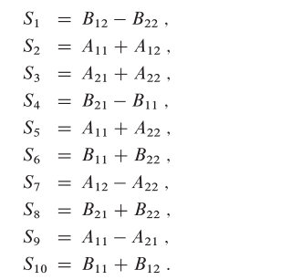
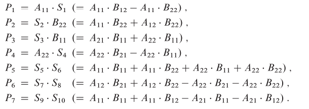
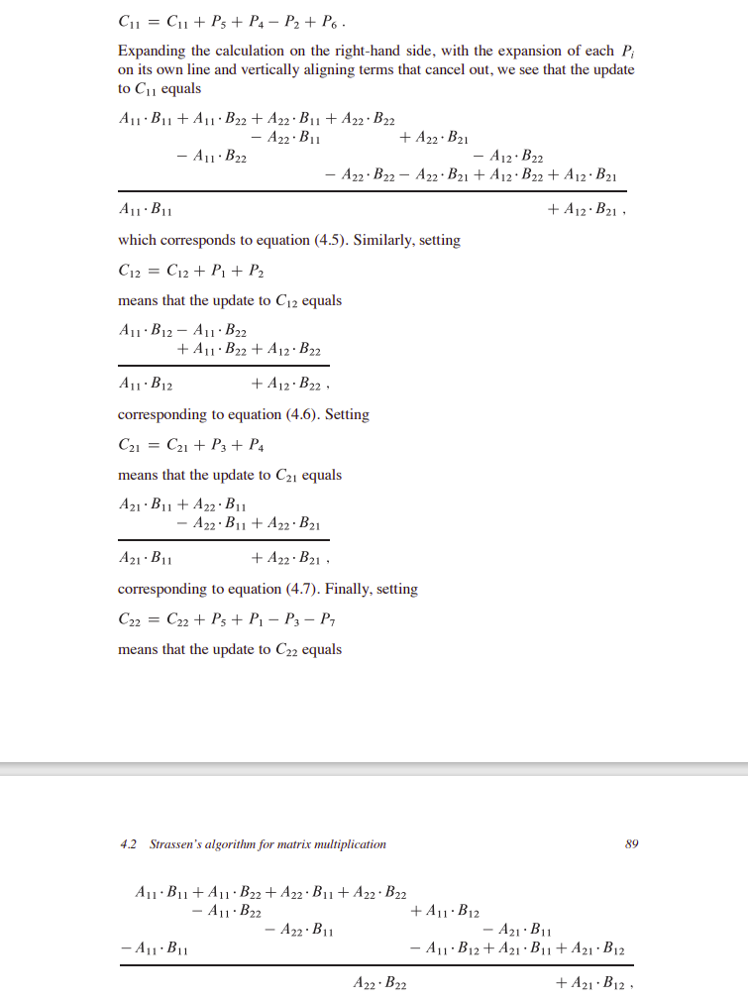
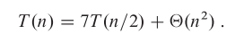
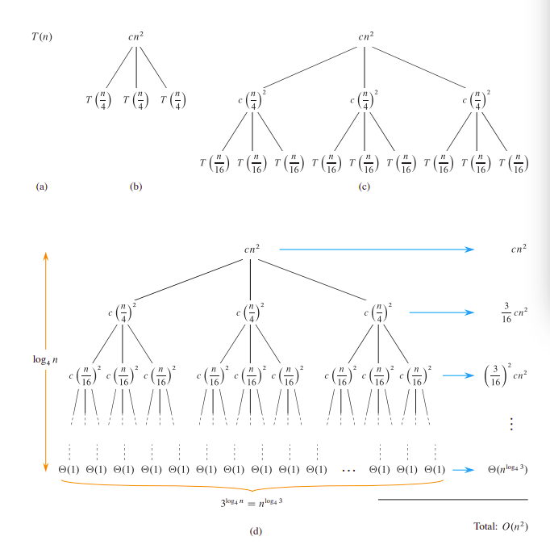
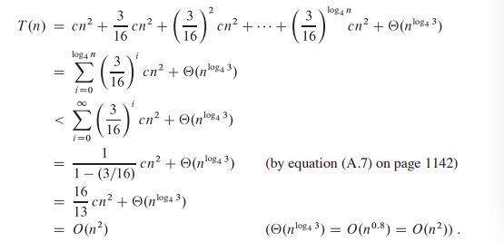
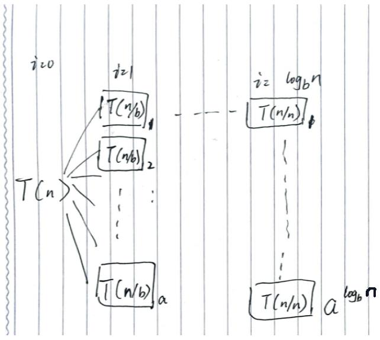
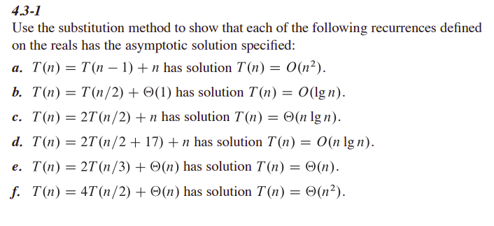

实现策略分三步：
分治策略可以用递归的方式实现 递归实现的样式：
function:
//基本情况的结果(触底后向上)
if base case:
do...
//进入子问题并求解(向下)
else if recursion case:
function
...
//必要的运算后得出结果(向上)
make the result
return result
一般算法：

Strassen算法的思路：
$$
a^2-b^2 = (a+b)*(a-b)
$$
Strassen的做法
把每个矩阵拆成四个矩阵
计算10个矩阵加法，产生10个新矩阵

计算7个矩阵乘法(递归)，产生7个新矩阵

计算好多个矩阵加法，修改原矩阵的内容

该算法时间复杂度的递推式如下图：

书上所说：Strassen算法的时间复杂度为：
$$
T(n) = \Theta(n^{\log_2 7})
$$
递归树
栗子:
$$
T(n) = 3T(n/4)+cn^2
$$


尝试推导通式：
$$
T(n)=aT(n/b)+cn^d
$$
画图

有：
$$
T(n) = a^{\log_b n}T(1) + \Sigma_{i=0}^{\log_b n -1}[c(n/b^i)^d~a^{i}]
$$
提取系数：
$$
T(n) = c_2 n^{\log_b a} + c n^d
\Sigma_{i=0}^{\log_b n -1}(a/b^d)^i
$$
若(a/b^d = 1),则：
$$
T(n) = c_2 n^d +cn^d\log_b n = \Theta(n^d\log_b n)
$$
否则，等比数列求和：
$$
T(n) = c_2 n^{log_b a} + c_1 n^d[1-(a/b^d)^{\log_b n}]/(1-a/b^d)
$$
化简：
$$
T(n) = c_2 n^{log_b a} + c_1/(1-a/b^d)~ n^d[1-(a/b^d)^{\log_b n}]
$$
$$ T(n) = c_2 n^{log_b a} + c_1/(1-a/b^d)~ n^d[1-n^{\log_b a -d}] $$ $$ T(n) = c_2 n^{log_b a} + c_1/(1-a/b^d)~ n^d - c_1/(1-a/b^d)n^{\log_b a} $$ $$ T(n) = [1- c_1/(1-a/b^d)]~ n^d - c_1/(c_2-a/b^d)n^{\log_b a} $$
当a < b^d,即\log_b a < d:
(1-a/b^d) < 0
$$
T(n) = \Theta(n^d)
$$
当a > b^d,即\log_b a > d:
(1-a/b^d) > 0
$$
T(n) = \Theta(n^{\log_a b})
$$
而这，就是4-5中的主方法的结论
Strassen算法通过减少树的分支(bush)使得计算量下降
下面是一些常见的形式，代入上面的式子也能得到相应的形式：
